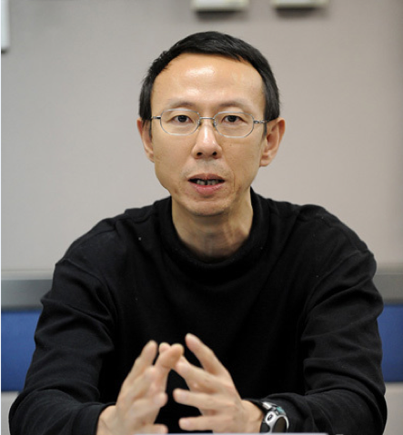
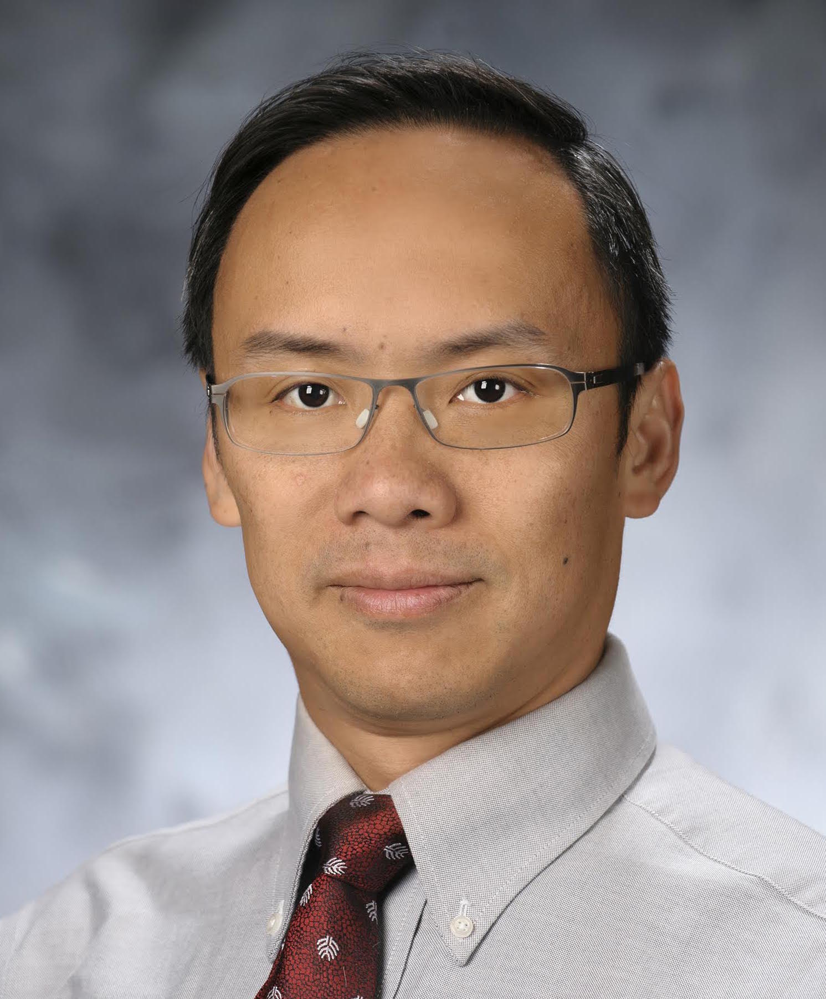

年全国计算机体系结构学术年会
特邀报告

李凯
美国工程院院士，普林斯顿大学计算机科学系教授，ACM Fellow，IEEE Fellow，CCF Fellow，硅谷的Data Domain公司的创始人
Title：Parallel Computing for Analyzing Functional Interactions of the Human Brain
Abstract:
Neuroscience and computer science have been interacting effectively for the past three decades. For example, convolution neural networks (so called deep learning) was first proposed by neuroscientists in the mid 80s. Further understanding how a human brain functions may allow computer scientists to accelerate the progress of artificial intelligence. Much previous research in neuroscience has focused on studying the activities of brain regions. During the past few years, the collaborations between computer science and neuroscience started attacking the problem to understand the functional interactions between brain regions from functional magnetic resonance imaging (fMRI) data. A straightforward method is to compute full correlations of the voxels in a fMRI dataset to exhaustively explore functional interactions in the human brain. However, such method would take years to complete one run with a typical neuroscience study dataset on a modern compute server, thus no previous attempt has been made in the past. This talk gives an overview of how to optimize the algorithm and parallel for a cluster with manycore processors, reducing the computational time to minutes. We also discuss how to further optimize the method to achieve real-time data analysis for building a service for real-time, closed loop neuroscience studies.
This is joint work with Yida Wang, Bryn Keller, Mihai Capotă, Michael J. Anderson, Narayanan Sundaram, and Theodore L. Willke from Intel, Jonathan D. Cohen and Nicholas B. Turk-Browne from Princeton Neuroscience Institute.

丛京生 (Jason Cong)
http://vast.cs.ucla.edu/people/faculty/jason-cong
ACM Fellow，IEEE Fellow， 北京大学“千人计划”客座教授，洛杉矶加州大学计算机科学系教授，校长讲席教授，副教务长
Title：Customizable Computing --- From Single-chip to Datacenters
Abstract:
In our 2008 proposal to the NSF Expeditions in Computing program, we argued that future computing systems would be customizable with extensive use of accelerators, as custom-designed accelerators often provide 10-100X performance/energy efficiency over the general-purpose processors. Such an accelerator-rich architecture presents a fundamental departure from the classical von Neumann architecture, which emphasizes efficient sharing of the executions of different instructions on a common pipeline, providing an elegant solution when the computing resource is scarce. In constrast, the accelerator-rich architecture features heterogeneity and customizaiton for energy efficiency, which is better suited for energy-constrained designs where the silicon resource is abundant. Our research program on customizable computing turned out to be very timely and impactful -- with Intel’s $17B acquistion of Altera completed in December 2015, customizable computing is going from advanced research projects into mainstream computing technologies.
In this talk, I shall first present an overview of our research on customizable computing, from single-chip, to server node, and to data centers, with extensive use of composable accelerators and field-programmable gate-arrays (FPGAs), and highlight our successes in several application domains, including medical imaging, machine learning, and computational genomics. Then, I present our ongoing work on enabling automation for customized computing. One effort is on automated compilation for combining source-code level transformation for high-level synthesis with efficient parameterized architecture template generations. Another direction is to develop efficient runtime support for scheduling and transparent resource management for integration of FPGAs for datacenter-scale acceleration with support to the existing programming interfaces, such as MapReduce, Hadoop, and Spark, for large-scale distributed computation. I shall highlight the algorithmic and implementation challenges and our solutions to many of these compilation and runtime optimization problems.
Speaker Bio:
Jason Cong received his B.S. degree in computer science from Peking University in 1985, his M.S. and Ph. D. degrees in computer science from the University of Illinois at Urbana-Champaign in 1987 and 1990, respectively. Currently, he is a Chancellor’s Professor at the UCLA Computer Science Department, the director of Center for Customizable Domain-Specific Computing (CDSC). He served as the department chair from 2005 to 2008. Dr. Cong’s research interests include electronic design automation, energy-efficient computing, customized computing for big-data applications, and highly scalable algorithms. He has over 400 publications in these areas, including 10 best paper awards, and the 2011 ACM/IEEE A. Richard Newton Technical Impact Award in Electric Design Automation. He was elected to an IEEE Fellow in 2000 and ACM Fellow in 2008. He received the 2010 IEEE Circuits and System (CAS) Society Technical Achievement Award "For seminal contributions to electronic design automation, especially in FPGA synthesis, VLSI interconnect optimization, and physical design automation" and the 2018 IEEE Computer Society Technical Achievement Award “For setting the algorithmic foundations for high-level synthesis of field programmable gate arrays”. He is the only one who received a Technical Achievement Award from both the IEEE Circuits and Systems Society and the Computer Society.
Dr. Cong has graduated 35 PhD students. Nine of them are now faculty members in major research universities, including Cornell, Fudan Univ., Georgia Tech., Peking Univ., Purdue, SUNY Binghamton, UCLA, UIUC, and UT Austin. One of them is now an IEEE Fellow, six of them got the highly competitive NSF Career Award, and one of them received the ACM SIGDA Outstanding Dissertation Award. Dr. Cong has successfully co-founded three companies with his students, including Aplus Design Technologies for FPGA physical synthesis and architecture evaluation (acquired by Magma in 2003, now part of Synopsys), AutoESL Design Technologies for high-level synthesis (acquired by Xilinx in 2011), and Neptune Design Automation for ultra-fast FPGA physical design (acquired by Xilinx in 2013). Currently, he is a co-founder and the chief scientific advisor of Falcon Computing Solutions, a startup dedicated to enabling FPGA-based customized computing in data centers.

王元陶 (Randy Wang)
中科院研究员，曾任Intel中国实验室首席科学家，Edison项目负责人，戈登•摩尔杰出成就奖和ACM尤金•劳勒奖获得者
Title：The Little Engine That Could
Abstract:
We discuss some of the “behind-the-scene” developments and themes that motivated an Intel Labs research program, which eventually led to the recently launched Edison embedded system. We look at in what ways we have succeeded and in what we have failed. We’ll also present some of the novel prototype devices built on the Edison platform, devices that not only illustrate the design principles behind Edison, but also may point to some of the potential directions for systems targeting the nascent smart consumer device space.

谢源
Title：Technology-driven and Application-driven Architecture Innovation: Past, Present, and Future.
Abstract:
The interaction between computer architecture and IC technology is complicated and bi-directional. Emerging technologies, such as 3D integration and new non-volatile memories, affect the decisions computer architects make, while the developments in computer architecture also influences the viability of different technologies. On the other hand, emerging applications, such as machine learning and VR/AR, also provide new drivers and pose new challenges for future architecture design. In this talk, the speaker first will review the trends in computer architecture research topics in the past 25 years, and use 3D-integration as an example to demonstrate the interaction of architecture and technology, transforming the technology from research exploration to finally commercial adoption in architecture. Then emerging NVM technology and neuromorphic computing will be discussed as examples of the influence of emerging technology and emerging application on future architecture research. As our community embarks upon the post-Moore's Law era and looks towards a post-CMOS life, technology-driven and application-driven architecture innovations will become the keys for future computer architecture research.
Biography:
Yuan Xie received the B.S. degree in electronic engineering from Tsinghua University, Beijing, and the M.S. and Ph.D. degrees in computer engineering from Princeton University. He is currently a Professor in the ECE department at the University of California at Santa Barbara. Before joining UCSB in Fall 2014, he was with Pennsylvania State University, with rich industry experience in both research lab (AMD) and product team (IBM Worldwide Design Center).
Prof. Xie is a IEEE Fellow. He is also a recipient of the NSF CAREER award, SRC Inventor Recognition Award, IBM Faculty Award, and Best Paper Awards (HPCA15, ICCAD14, GLSVLSI14, ISVLSI12, ISLPED11) and Best Paper Award Nominations (MICRO13, ASPDAC09-10, DATE13, ICCAD06). He has published more than 200 research papers in prestigious IEEE/ACM journals and conferences, in the area of computer architecture, EDA, VLSI designs, and embedded systems. He is currently Editor-in-Chief for ACM Journal of Emerging Technologies in Computing Systems (JETC), Senior Associate Editor for ACM Transactions on Design Automation for Electronics Systems (TODAE), Associate Editor for IEEE Transactions on Computers (TC) and IEEE Embedded System Letter (ESL). He is a member of both the ISCA Hall of Fame and the HPCA Hall of Fame, the two premier conferences in computer architecture, that recognize the top authors in those conferences.